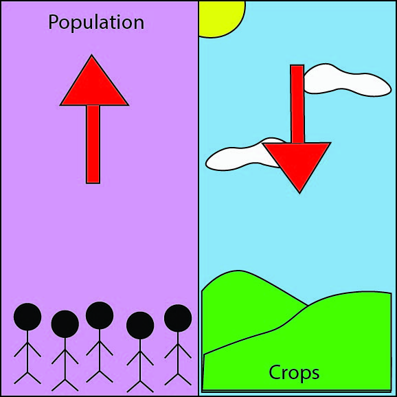
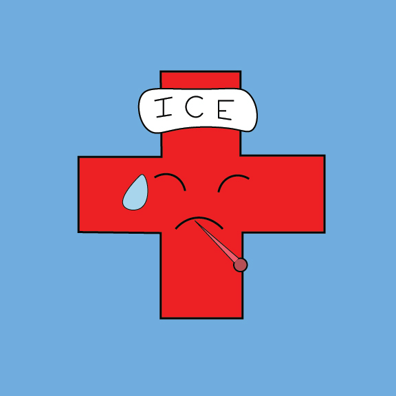

<html>
    <link rel="stylesheet" href="styles2.css">
</html>
 <h1>Effects of increased price on foods:</h1>
<p></p>

    

<h1>Population Increase</h1>
<p><p></p>


    <p>1.As population increases, the demand for food increases</p>
<p>2.The demand for increased amount of foods leads to crop failure</p>
<p>3.Crop failure leads to the use of chemicals to preserve and grow food at a faster rate.</p>
</p>
<h1>Health Issues</h1>
<p><p></p>


    <p>1.Chemicals used in crops leads to health issues for consumers</p>
   <p>2.Since food is overly priced, people have to opt for cheaper alternatives</p>
    <p>3.These cheaper alternatives, have little to no health benefits</p>
</p>
<h1>Poverty</h1>
<p></p>


    <p>1.Survival of the fittest</p>
    <p>2.Families spend excessive amounts of money on "healthy foods" (organic, vegan, etc.)</p>
   <p>3.It is a constant struggle of deciding food over finances</p>
</p>

